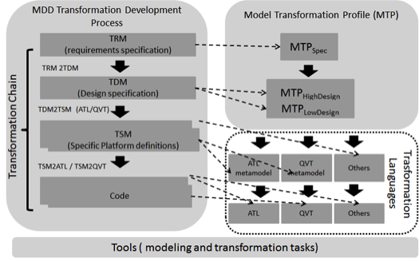

Transformations are key artifacts in MDD (Model Driven Development) approach: a software development project can be defined through a transformation chain converting source models into target models until code, enabling development process automation. Transformation can be complex and demand software processes, languages and techniques to improve their development in order to ensure reuse, portability, correctness, and so on. In this context we propose a transformation framework to develop model transformations using MDD approach. This framework is comprised by a Model Transformation Profile (MTP) to specify model transformations, a development process and modeling tools that enable the use of MDD to develop model transformations automatically/semi-automatically in different transformation languages.
The MDD Framework for the development of model transformation main goal is to provide a process suitable for a transformation domain, covering the entire software development life cycle integrated to a standard modeling language. Fig. 1 shows an overview of the framework and its main elements: (i) the MDD Transformation Development Process; (ii) the Model Transformation Profile (MTP); and (iii) a tool to (partially) automate the process.

Figure 1 - MDD Transformation Framework overview
The MDD Transformation Development Process aims to guide developers step by step on the development of model transformations. The process is specified according to SPEM metamodel and comprises tasks that lead from requirements specification until code. Specification starts modeling the TRM (Transformation Requirements Model) which comprises requirements and analysis tasks. We use examples to capture and analyze transformation requirements. From these examples a semi-automatic transformation generates the first release of the TDM (Transformation Design Model) which aims to model the design and architecture of the transformation. Tasks include the definition of what might be transformed in what (high design), transformation structure (architecture) and how transformation should be performed (low design). This specification is then transformed into TSM (Transformation Specific Model) which refers to specific languages. We provide generation to TSM in ATL language, due its wide use in MDD projects to develop transformations, or QVT language, because this is the OMG standard to design model transformation. Finally, from TSM the code is generated.
The Model Transformation Profile (MTP) is defined to support the modeling tasks of the process. MTP is divided in three packages: MTPspec, used for TRM modeling tasks, MTPHighDesign and MTPLowDesign, used for TDM modeling tasks.